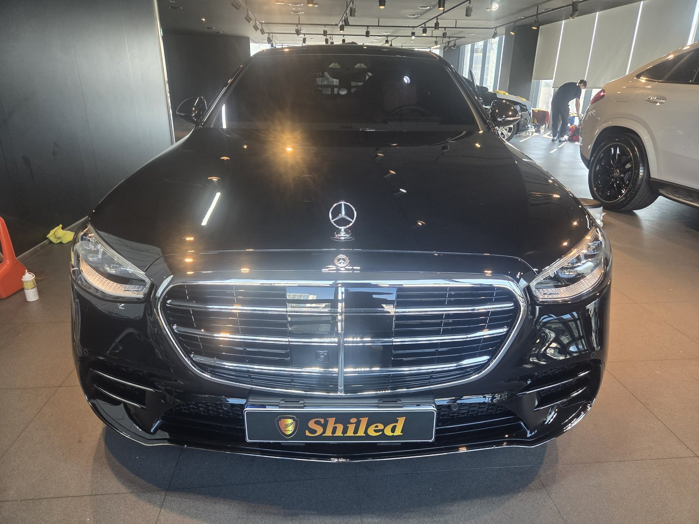
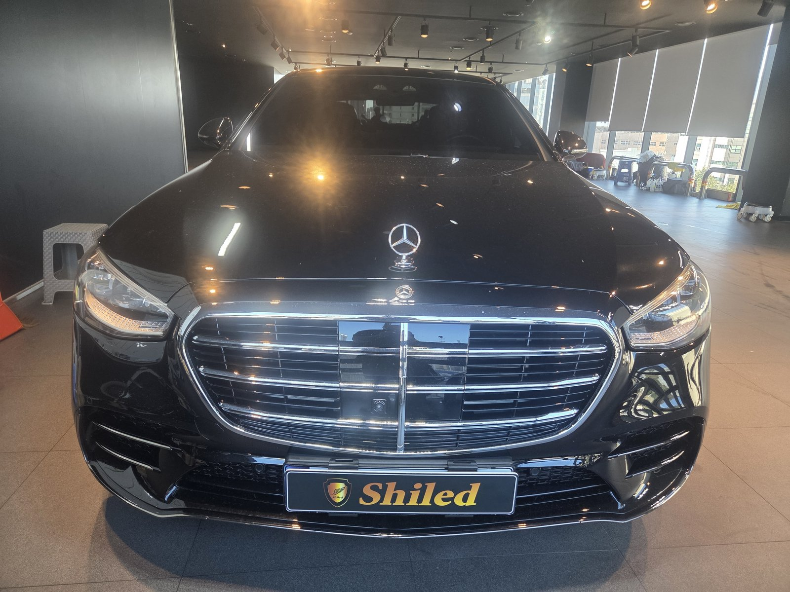
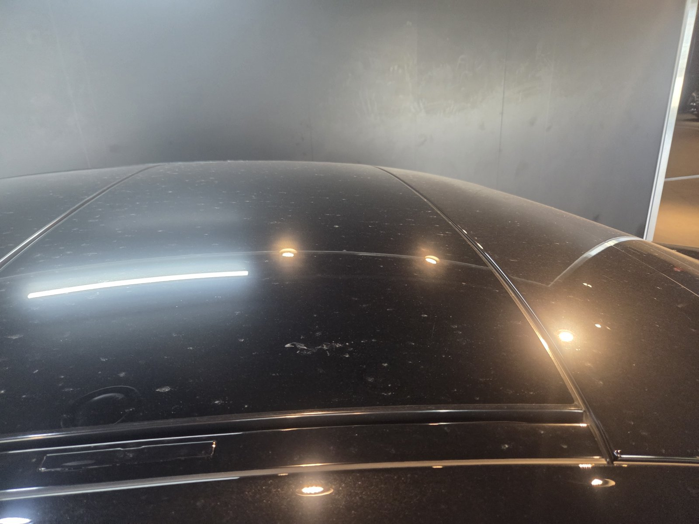
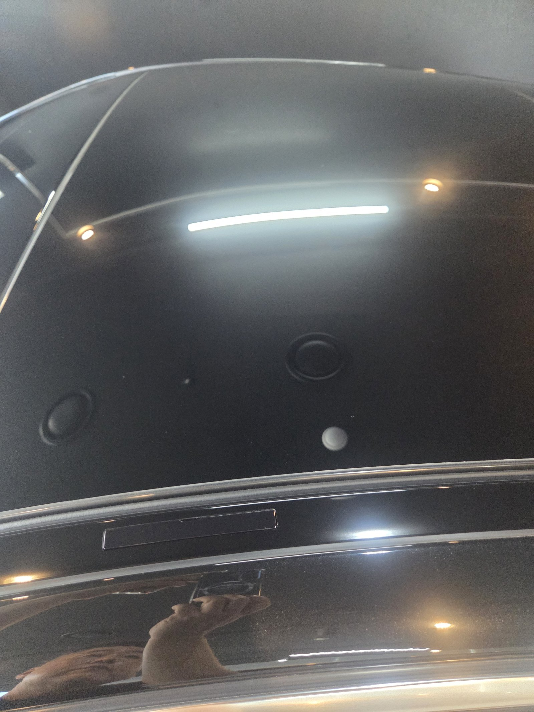
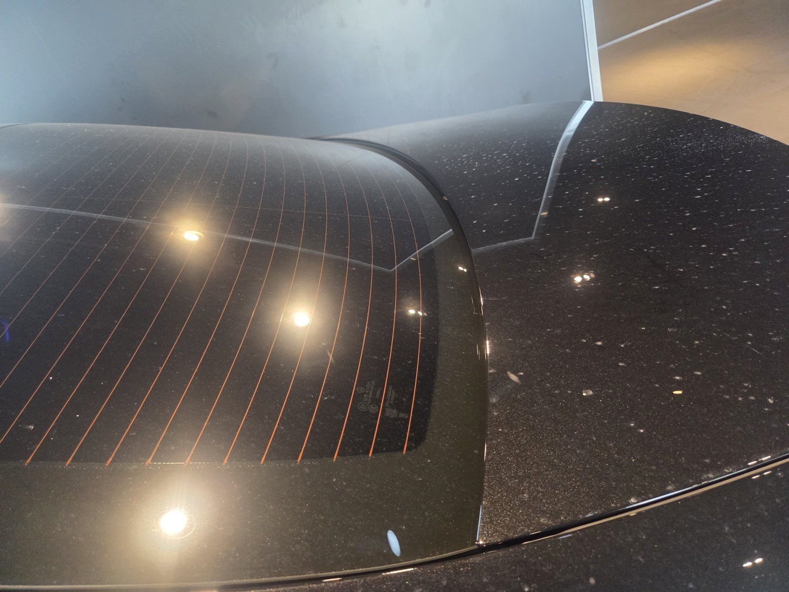
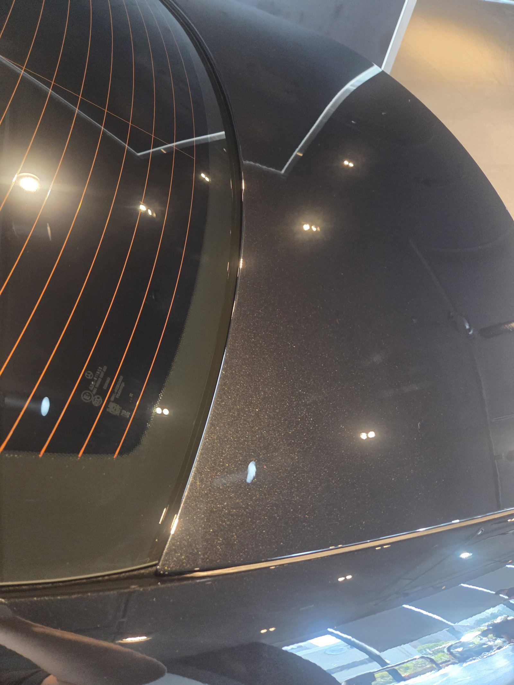
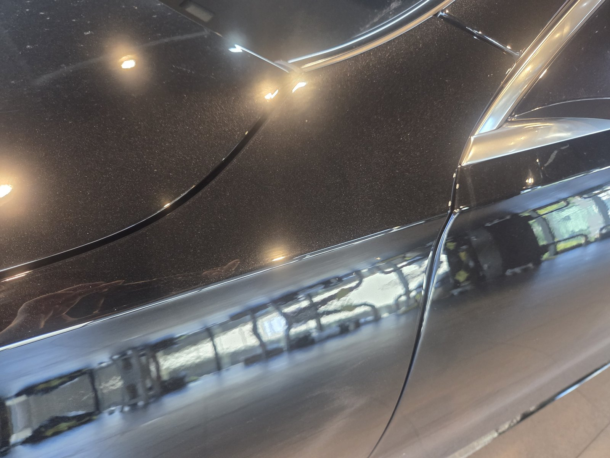
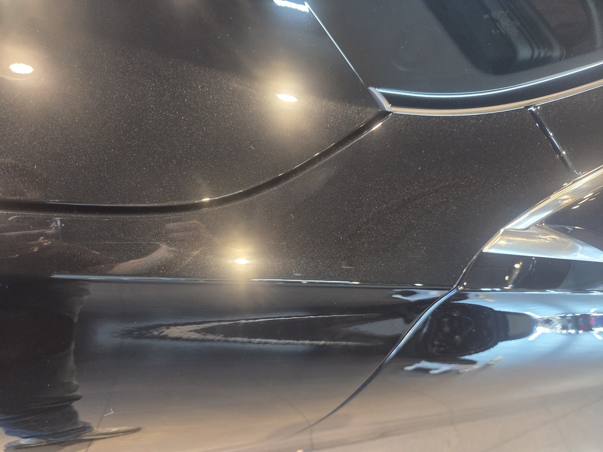
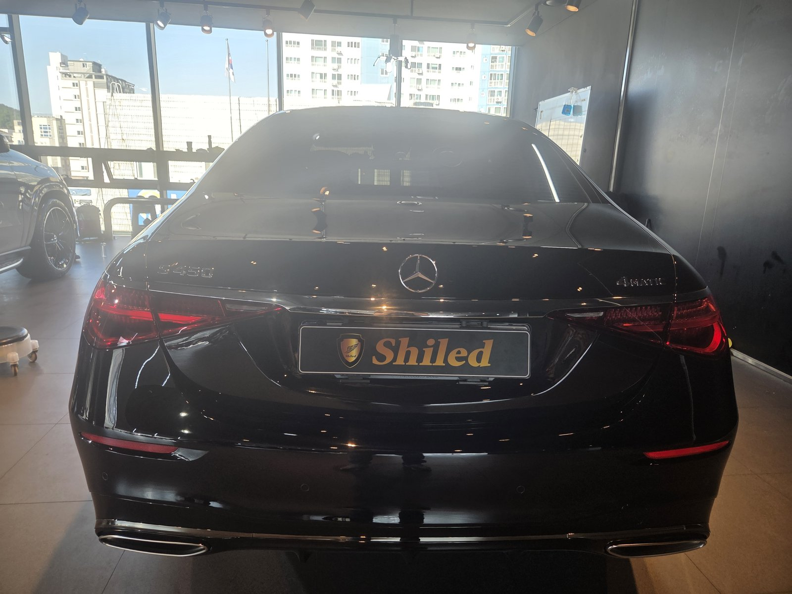

벤츠 S450 검정입니다.
멀리서 보면 깨끗한 차입니다.
그런데 조명을 비스듬히 대면 이야기가 달라집니다.
부산 광택 작업으로 S450의 도장면을 다시 정리한 기록입니다.

검정 S클래스, 어디에 잔기스가 쌓이나요?
손이 가장 많이 닿고, 빛을 가장 많이 받는 면입니다.
이 차는 루프와 C필러, 뒷도어 패널이 그랬습니다.
검정 메탈릭은 조명 아래에서 잔기스가 원을 그리며 드러납니다.
세차 타월과 드라잉 습관이 그대로 남는 자리입니다.



루프 — 조명 주변에 번지던 잔기스가 정리됐습니다
부산 광택, S450은 어떤 순서로 진행했나요?
바로 광택기를 대지 않습니다.
① 세차와 철분 제거로 표면 오염부터 걷어내고,
② 조명으로 부위별 상태를 확인한 뒤,
③ 컴파운드와 패드를 단계별로 바꿔가며 마감했습니다.
대형 세단은 패널이 넓습니다.
구간을 나눠 처리해야 얼룩 없이 고르게 끝납니다.


C필러와 뒷유리 주변 — 곡면이 바뀌는 구간이라 패드 각도를 계속 바꿨습니다
기술자의 팁
검정 차는 드라잉 타월을 문지르는 순간 잔기스가 생깁니다. 물기는 타월을 올려놓고 눌러 흡수시키거나 송풍으로 날리는 것이 가장 안전합니다.


뒷도어 패널 — 주변 풍경이 또렷하게 비칩니다
광택 후 S450은 어떻게 달라졌나요?
조명이 점으로 맺힙니다.
잔기스가 있을 때는 빛이 번져 보였습니다.
도장면의 생얼이 드러난 셈입니다.
이번 부산 광택의 결과는 사진 그대로입니다.

자주 묻는 질문
Q. 검정차는 왜 잔기스가 더 잘 보이나요?
A. 검정은 빛을 흡수하는 색이라 표면의 미세한 홈이 반사광을 흩뜨릴 때 대비가 크게 납니다. 같은 잔기스라도 흰 차보다 훨씬 또렷하게 보입니다.
Q. S클래스처럼 큰 세단은 광택이 더 오래 걸리나요?
A. 패널 면적이 넓은 만큼 작업 구간이 많습니다. 구간을 나눠 단계별로 마감해야 얼룩 없이 고르게 끝나기 때문에 시간을 충분히 잡고 진행합니다.
Q. 광택하면 도장이 얇아지지 않나요?
A. 광택은 클리어층 표면을 아주 얇게 고르는 작업입니다. 그래서 측정과 확인 없이 무리하게 깎지 않고, 상태에 맞춰 컴파운드 단계를 정합니다.
Q. 광택은 얼마나 자주 받아야 하나요?
A. 정해진 주기는 없습니다. 세차 습관과 보관 환경에 따라 잔기스가 쌓이는 속도가 다르기 때문입니다. 강한 조명 아래서 도장면을 봤을 때 자국이 눈에 띈다면 그때가 적기입니다.
Q. 쉴드광택 위치와 예약은 어떻게 하나요?
A. 부산 남구 유엔로220 1F 쉴드광택입니다. 예약·상담은 010-3384-1850, 대표 최한중이 직접 상담하고 책임 시공합니다.
검정 차의 잔기스, 조명 아래에서 같이 확인해 드립니다.
제품을 직접 만드는 사람이 직접 시공합니다.
부산에서 광택을 고민 중이시면 편하게 연락 주십시오.
어떤 차를 타냐보다 어떻게 타냐가 중요합니다~!
시공 중에는 전화를 받지 못할 때가 많습니다.
카카오톡으로 차종과 원하시는 시공을 남겨주시면 확인 후 답변드립니다.
쉴드광택 · 부산 남구 유엔로220 1F · 대표 최한중